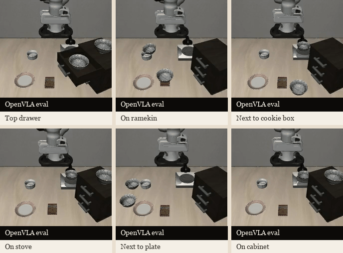

OpenVLA Evaluation for Language-Conditioned Pick-and-Place
A compact evaluation study of OpenVLA on tabletop manipulation prompts involving the same object under different spatial contexts. The GIF shows six successful trajectories with instruction-specific scenes, covering retrieval from the top drawer, ramekin, cookie-box, stove, plate, and cabinet settings. The result highlights how a generalist vision-language-action model can stay responsive to changing natural language instructions while preserving coherent pick-and-place behaviour across layouts.
Selected evaluation montage assembled from six successful OpenVLA rollouts recorded on March 8, 2026, each labeled by instruction context.
